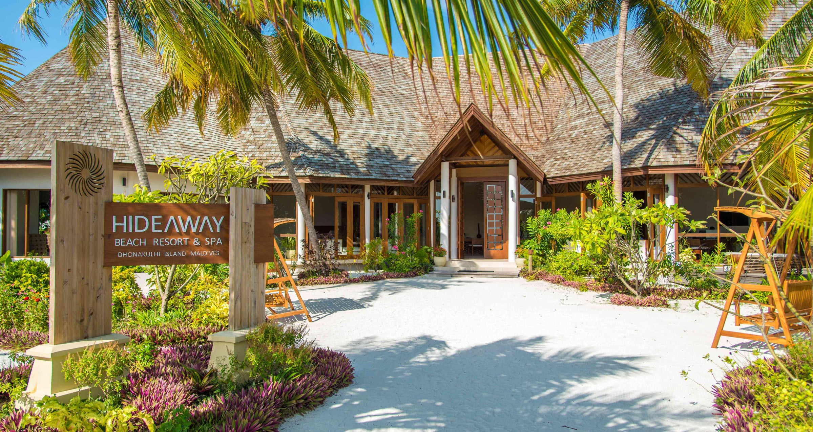
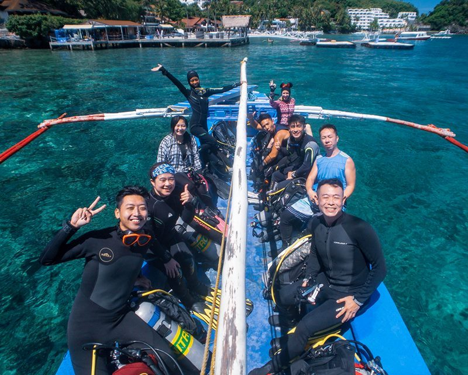
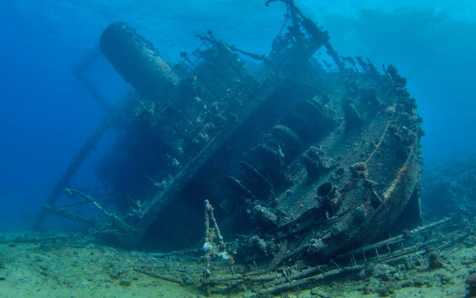
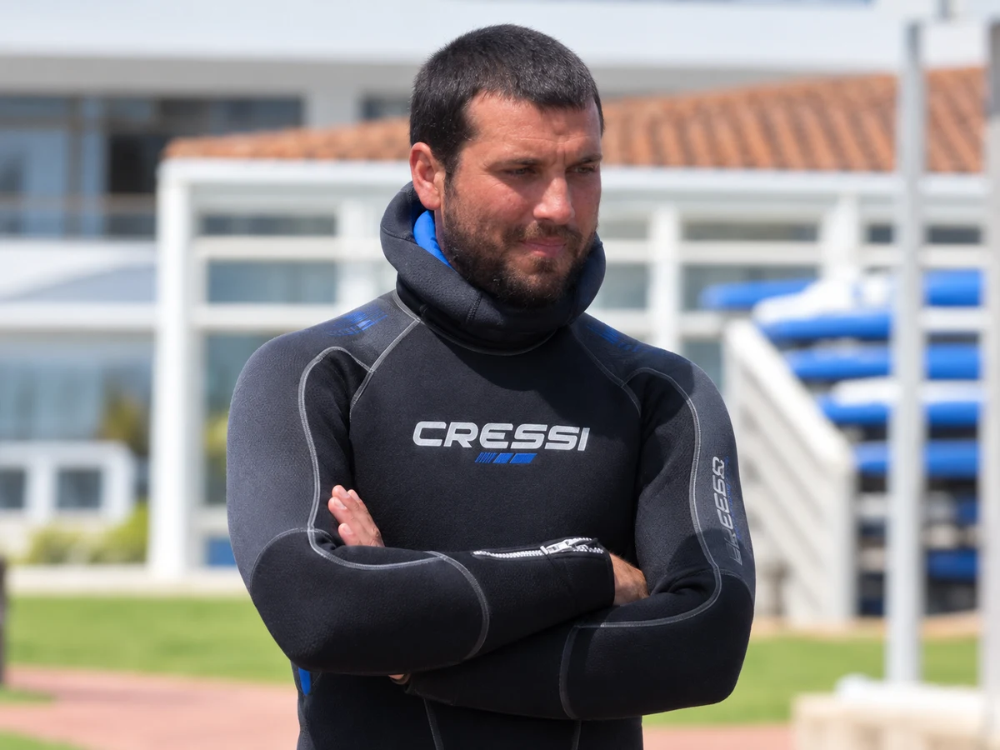
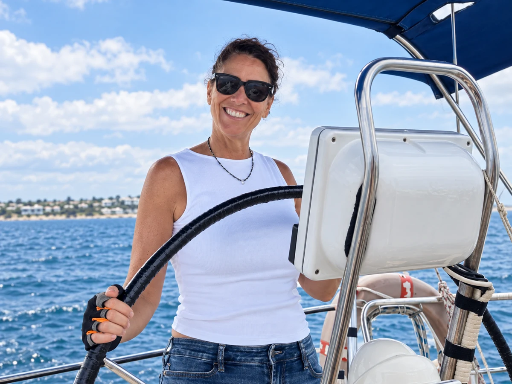
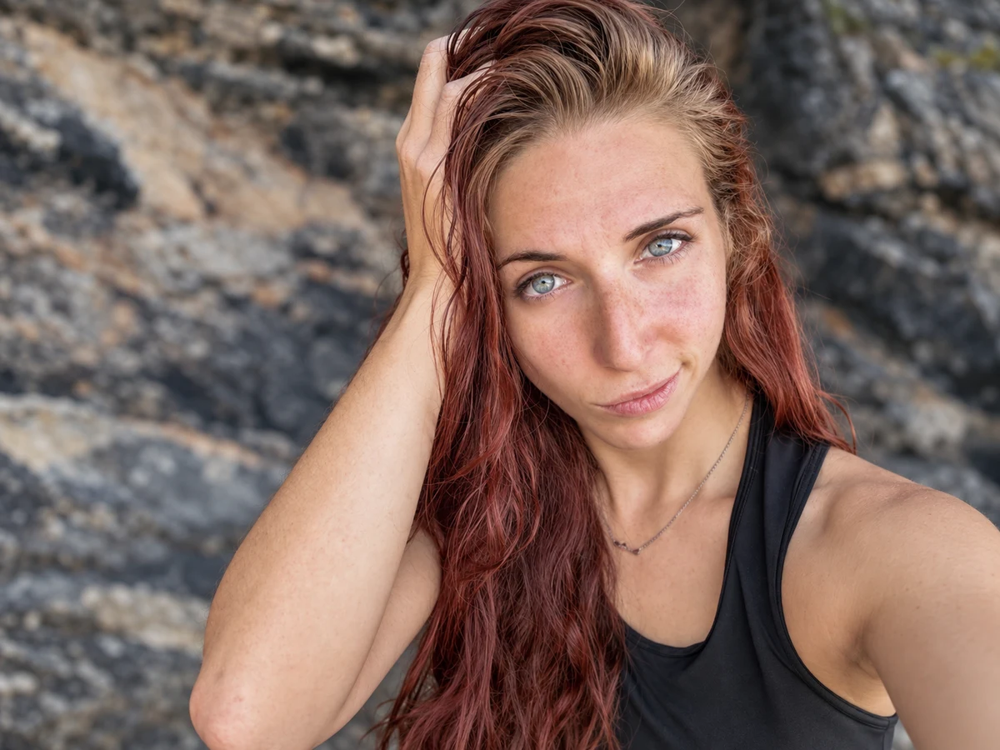
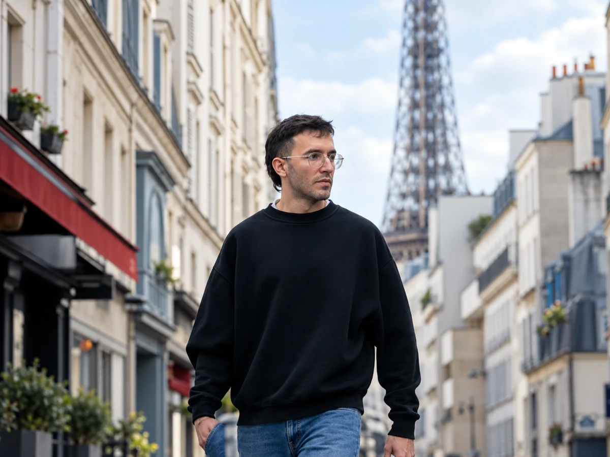

Un centro de buceo
desde el principio.
Evaluamos el entorno subacuático de tu resort y te asesoramos para dar forma a un centro de buceo: zonas de interés, equipamiento, costes y equipo humano.
Diseña tu proyecto ↗BLUE QUEST / EXPLORACIÓN SUBACUÁTICA
Exploramos el océano para descubrir nuevas posibilidades de buceo. Transformamos el potencial de un lugar en el futuro de tu centro.
Nuevos puntos de buceo.
Decisiones con información.
Un océano de posibilidades.
NUESTRO ENFOQUE
Acompañamos a quienes quieren empezar y a quienes quieren llegar más lejos. Cada proyecto comienza por conocer lo que hay bajo el agua.

Evaluamos el entorno subacuático de tu resort y te asesoramos para dar forma a un centro de buceo: zonas de interés, equipamiento, costes y equipo humano.
Diseña tu proyecto ↗
Exploramos tu zona para localizar y documentar nuevos puntos de buceo recreativo con los que ampliar las experiencias de tus clientes.
Descubre nuestras expediciones ↗
Exploración para la búsqueda, localización y recuperación de objetos o embarcaciones hundidas, con un alcance definido según las condiciones de cada operación.
Conoce nuestra tecnología ↗ATLAS DE EXPLORACIÓN
De los atolones del Índico a las islas del Atlántico. Consulta los destinos explorados y nuestras próximas prospecciones.
Ubicaciones de referencia de los destinos; no indican puntos de inmersión.
TECNOLOGÍA DE CAMPO
Tecnología avanzada al servicio de cada exploración. Combinamos cartografía, observación y sistemas de apoyo según las necesidades del proyecto. Estas imágenes muestran una selección de herramientas y sus aplicaciones.

CARTOGRAFÍA BATIMÉTRICA
Relieve sombreado con información cartográfica. Imagen ilustrativa, no una carta para navegar.
Analizamos el relieve y las profundidades para orientar la prospección y localizar zonas de interés. La cartografía combina vistas del fondo, satélite y sonar según la cobertura disponible. Explora algunos ejemplos en la imagen.
La exploración acústica ayuda a interpretar la estructura del fondo y localizar posibles objetivos, incluso cuando la visibilidad limita la observación directa.
La captura panorámica permite documentar el entorno y crear recorridos inmersivos para revisar y compartir los hallazgos. Adaptamos la configuración de captura a las condiciones de cada exploración.
Los sistemas de propulsión subacuática facilitan el desplazamiento y el recorrido de zonas de prospección. Su configuración se adapta al alcance y a las condiciones de la operación.
Las máscaras integrales y los sistemas de comunicación permiten compartir observaciones y coordinar el trabajo bajo el agua. La conexión con superficie requiere equipos compatibles.
ASESORAMIENTO INTEGRAL
Asesoramos a empresas y profesionales que quieren crear un centro de buceo. Desde elegir una oportunidad en el mapa hasta definir qué hace falta para ponerla en marcha.
Identificación de zonas del mundo con potencial para tu proyecto y análisis de su contexto.
Orientación sobre inversión inicial y necesidades operativas según el alcance del centro.
Selección del equipamiento necesario para el servicio de buceo y la operación prevista.
Definición de perfiles, funciones y necesidades de personal para la actividad.
THE TEAM
Exploración, ciencia, gestión y documentación. Un equipo multidisciplinar que conecta el trabajo bajo el agua con la planificación y los resultados de cada proyecto.

DIRECCIÓN DE EXPEDICIONES
Instructor de buceo · Submarinista técnico · Solo Diver · Agente de viajes
Dirige la planificación y ejecución de las expediciones subacuáticas, desde la definición de objetivos hasta la evaluación de los resultados de campo. Integra los criterios de seguridad, los recursos técnicos y la logística de desplazamiento en un plan operativo adaptado a cada proyecto.

GESTIÓN DE PROYECTOS Y RELACIONES INSTITUCIONALES
Informática · Relaciones públicas · Submarinista
Gestiona la relación con clientes y colaboradores y coordina el ciclo administrativo de cada proyecto. Centraliza las solicitudes, organiza su evaluación con el equipo técnico y supervisa la planificación, la documentación y el seguimiento de los compromisos adquiridos.

COORDINACIÓN CIENTÍFICA Y AMBIENTAL
Bióloga marina · Submarinista
Define el enfoque científico y los métodos de observación de cada proyecto de exploración. Asesora sobre la estrategia de prospección, interpreta las características del entorno marino y aporta criterios para obtener información rigurosa con el menor impacto posible.

DOCUMENTACIÓN SUBACUÁTICA Y PRODUCCIÓN VISUAL
Videógrafo subacuático · Submarinista de apoyo
Coordina el registro audiovisual de las exploraciones y presta apoyo al equipo durante las inmersiones. Transforma las observaciones de campo en material visual estructurado, recorridos inmersivos y mapas orientativos que facilitan la interpretación de los nuevos puntos de buceo.
TU PRÓXIMA EXPLORACIÓN
Cuéntanos dónde, qué te gustaría explorar y qué necesitas conseguir. Prepara una consulta con la información de tu proyecto.